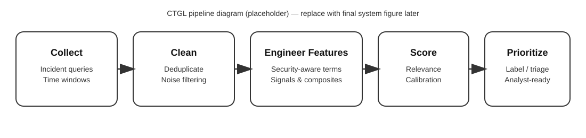

CyberTweetGrader&Labeler (CTGL)
A domain-specific NLP pipeline to detect, grade, and prioritize/label social-media posts related to cybersecurity incidents, demonstrated on the UHS healthcare ransomware case.
Motivation
During major cyber incidents, social media can provide early signals, public impact reports, and rapid dissemination of updates. However, the stream is noisy and heterogeneous, making it hard to identify high-value content reliably. CTGL was designed to turn that stream into a structured, prioritized view of incident-relevant information.
What CTGL does
- Incident-centric detection: identifies posts that are plausibly relevant to a specific cyber incident.
- Relevance grading: assigns a relevance score using engineered feature groups that reflect incident context (e.g., organization-specific terms, cybersecurity indicators, warnings, media signals).
- Prioritizing/labeling: converts scores to actionable relevance categories (e.g., High / Medium / Low / Irrelevant) to support triage and analysis.
System overview

Dataset contribution
CTGL is supported by a curated dataset of posts related to healthcare cyber incidents (with UHS as a primary case study). The dataset is being prepared for public release with documentation and reproducible preprocessing.
If you prefer, this section can be updated to include a concrete release plan (what will be shared, what will be withheld, and under which license).
Evaluation & comparison
In addition to validating CTGL as a domain-specific tool, this research line includes empirical comparisons against traditional ML and transformer/LLM-based approaches, emphasizing not only predictive performance but also deployment-relevant considerations (cost, latency, and energy consumption where applicable).